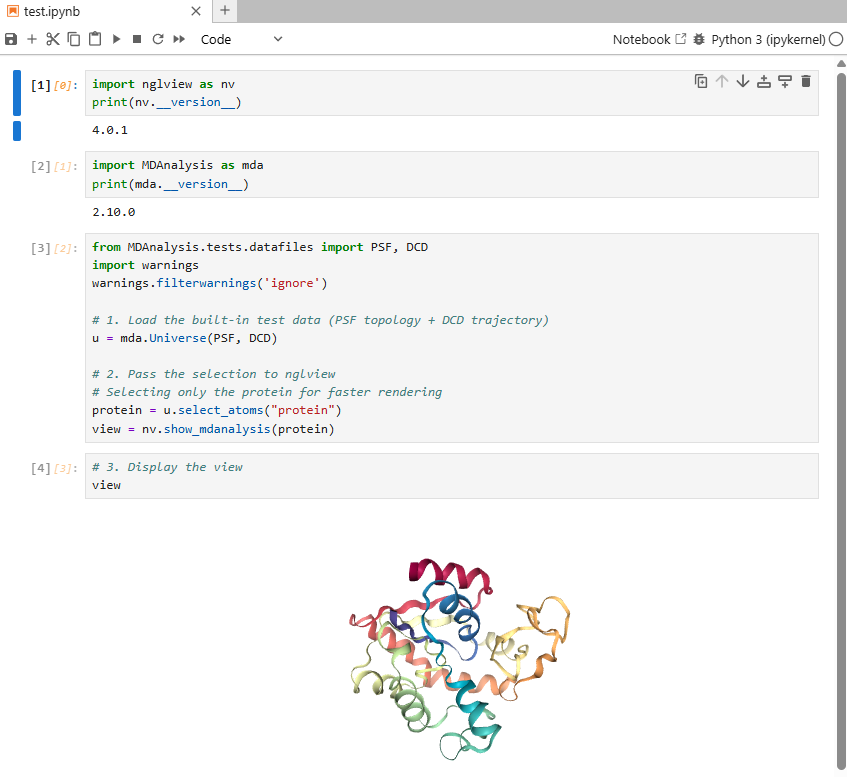

Conda Env for NVIDIA-BioNeMo
- Author:
Zhenqing Ye
- Date:
June 28, 2026
- Revision:
Draft
Recently, NVIDIA released the bionemo-agent-toolkit — a specialized suite of tools and models for drug discovery and protein design. In this series of guides, we will leverage these powerful resources to demonstrate how JupyDeep can seamlessly integrate intelligent agents into your scientific workflows to accelerate your research.
Essentially, JupyDeep agents are capable of dynamically configuring environments by installing necessary Python packages on demand. However, computational biology workflows are inherently complex and often require dependencies beyond standard Python libraries, such as pre-compiled binary tools. To reduce the agent’s overhead and optimize token usage, it is best practice to prepare the base computational environment in advance. Accordingly, this guide focuses on setting up a dedicated Conda environment tailored for the NVIDIA-BioNeMo toolkit.
Note
We have opted not to use uv in this guide, as it is not optimized for the installation of non-Python binary dependencies
within the environment.
For conda, we will create a new environment and then install JupyDeep using pip inside it.
$ export PYTHONNOUSERSITE=1
$ conda create -n bionemo python=3.12 jupyterlab jupyter_console nglview rdkit biopython requests pandas ipywidgets mdanalysis MDAnalysisTests -c conda-forge
$ conda activate bionemo
$ (bionemo) pip install "jupyter-mcp-server @ git+https://github.com/yezhenqing/jupyter-mcp-server.git" jupydeep
For molecule and protein structure visualization, we utilize the nglview package, which is an excellent tool for this purpose. However, there is an ongoing issue affecting the latest version (v4.0.1) that has not yet been resolved. Consequently, we need to apply a few minor adjustments to ensure compatibility and stable operation.
# Ensure the bionemo environment is activated
# Apply hotfix to the nglview frontend version
$ (bionemo) sed -i "s/__frontend_version__ = '4.0'/__frontend_version__ = '3.1.5'/" $(python -c "import site; print(site.getsitepackages()[0])")/nglview/_frontend.py
Now, let’s activate the Conda environment and launch JupyterLab to verify that everything is working correctly.
# Ensure the bionemo environment is activated
$ (bionemo) jupyter lab --ip=0.0.0.0 --no-browser
Navigate to the JupyterLab URL and open a new notebook. Once you run the test code, you should see results similar to the figure below, confirming that your BioNemo Conda environment has been successfully installed. Congratulations!
{kind=link}

An environment.yml file is provided to help you set up your Conda environment.
Please refer to the BioNeMo_Conda_Env example in the jupydeep-gallery.